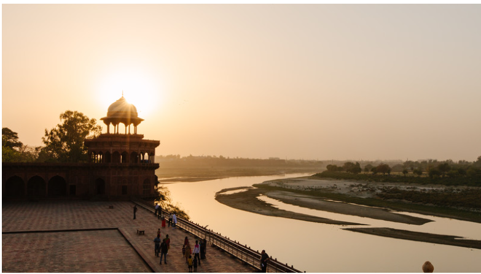
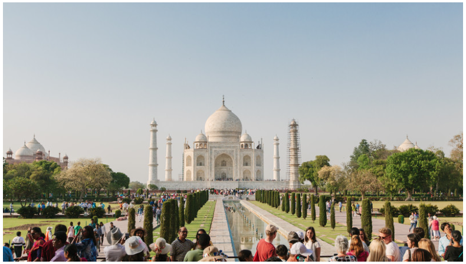
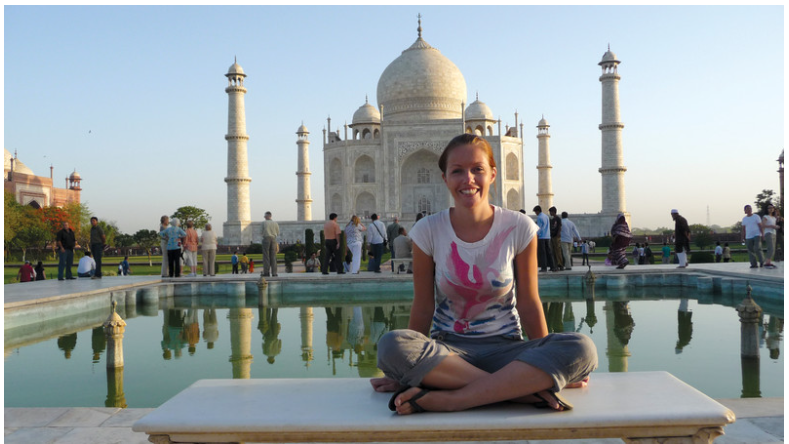
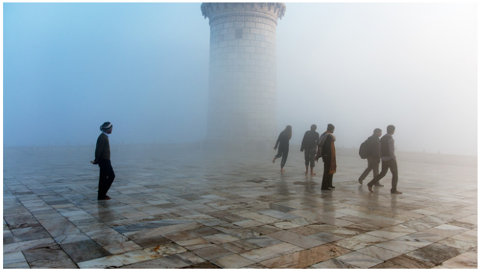
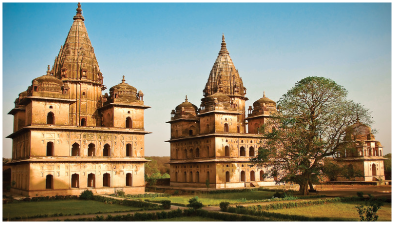
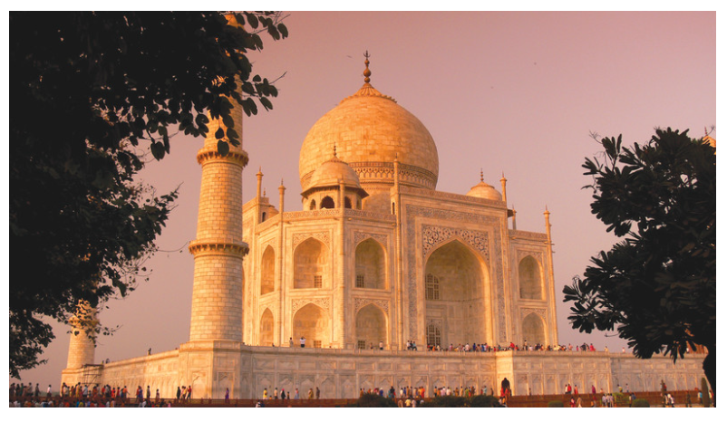

What to bring to the Taj Mahal
Always leave your valuables in the hotel. There are lockers available at the Taj but it’s best to have
minimal belongings on you so you don’t spend too much time checking in.
You really only need to bring the following in one small bag:
- Passport
- Money
- Water
- Medicine
- Camera
- Phone
What to wear to the Taj Mahal
There is no dress code but you should still be respectful.
If you want to enter the mosque, you will
need to cover your head, shoulders and knees.
It gets hot in Agra and there is very little shade, so wear light clothing and make sure you wear
sunscreen. Then again, Agra also gets very cold in winter (Nov-Feb) so layers are your friend too.
If you visit with Intrepid, you’ll be taken there earlier in the day or later in the afternoon to avoid
the worst of the heat.

Useful tip from Ryan Turner, Intrepid’s Destination Manager for India:
Having been to the Taj a few times, I’ve learnt the importance of wearing shoes that are
easy to remove. You need to take your shoes off when you go inside and the easier they are
to slip on and off the better. This actually applies to much of India – shoes with loads of
laces are hard!
Other things you need to know
No food is allowed inside.
Cigarettes and lighters are also not allowed.
Tripods and additional lighting equipment need prior permission to be brought with.
Photography inside the mausoleum is prohibited. Most electronics (except cameras and small
video cameras) are not allowed.
Be wary of touts, thieves and rude shop keepers. It’s a busy, high-pressure area, but keep your
wits about you and you won’t need to worry!
When you’re at the Taj Mahal
Go early, wait for space to explore and photograph, and get yourself away from the crowds (if
possible).

If you walk around to the right side of the Taj (as you approach the east gate), you can get an
amazing photo from the riverbank behind the Taj. (Always go in groups and get a rickshaw to
take you there and back cheaply.)
And simply focus on taking in all the magic. Even Intrepid leaders who see the Taj Mahal monthly
(or more!) remain in awe of it. Sana Jinah, one of the company’s inspiring female tour guides, has
some tips on how to do this:
The Taj Mahal is a place for exploring quietly on your own or with loved ones. So, once I’m
done briefing my groups I give them a good 2-3 hours inside the Taj. There are ways I try to
make the experience special and memorable for travelers, but if I say what they are then
they will no longer be surprises!
The Taj has such a charm. Every time I see it it looks different (due to the direction of the
sunlight). It’s so beautiful…
She also recommends those looking for optimum conditions try visiting the Taj Mahal at sunrise
on a clear day.
Tips for taking photos at the Taj Mahal
Everyone wants that iconic shot of themselves at the Taj Mahal. You know the one – where you sit
on the bench and the grandeur of the marble mausoleum forms the backdrop.

But if you’re feeling creative and want to mix things up, there are tons of different angles worth seeking out.
Below are some photography suggestions from Intrepid’s General Manager in India, Pravin \
Tamang. (His photography is amazing – check it out!)
- Shot from the arch of the main doorway
- Capture the reflection of the fountains that line the route towards the Taj Mahal’s main platform
- Shot of Taj Mahal from the riverside with the reflection on the river
- Shot from the other side of the river, ‘Mehtab Bagh’, where you get a glimpse of Taj
- The Taj Mahal can also be shot from some parts of the Red Fort
You can also get great photos from the many rooftops of restaurants close to the Taj Mahal.
Unfortunately, Agra does get pretty smoggy, so winter can often have poor visibility earlier in the
day and around sunset. That said, this can make shots look very atmospheric!

What to do after visiting the Taj Mahal
First, go back to your hotel room, take a shower, and revel in the relative peace and quiet.
Then
explore these cool destinations both in and out of Agra:
What to do in Agra
The Taj Mahal is, quite clearly, the star of the show in this northern Indian city. But the Agra Fort
is
also stunning, especially if you didn’t get a chance to go to the Red Fort in Delhi. A 16th-century
Mughal monument and UNESCO World Heritage site, it’s a sight not to be missed.
Despite being located on the Golden Triangle tourist circuit, there’s less to do in Agra than
in
many other Indian cities. It’s pretty polluted from the heavy industry (more on that later) and you
likely won’t spend too long there, whatever the trip.
One way that Intrepid tries to show visitors a different perspective on the country is by
(sometimes) taking travelers to Sheroes Hangout. Just blocks from the Taj Mahal, it’s a small cafe
run entirely by female acid attack survivors. Here, victims of attacks are employed and tell their
stories. It can be confronting, but also inspiring and memorable in equal measures.
SUBSCRIBE TO INTREPID’S NEWSLETTER FOR MORE TRAVEL GUIDES, COMPETITIONS,
GIVEAWAYS & MORE
Where to go outside of Agra
There are various great destinations only a few hours drive (well, 4-7) from the Taj Mahal. Of these,
Orchha, Jaipur and Pushkar are all tourist-friendly, peaceful and beautiful places.
Orchha is a town that travelers often overlook. This is a shame, because it’s historic, laid-back
and has a bunch of beautiful temples. It’s not always on tour itineraries, but you CAN visit
it on this 15-day trip from Delhi to Kathmandu (cooking demo and palace visit included!).

Jaipur is much more well-known. Also known as the ‘Pink City’, the capital of Rajasthan is full of
chaos, charm and unique architecture. Visit the hilltop Amber Fort, haggle in the enchanting
bazaars, and consider taking a hot air balloon over the city to take it all in.
Pushkar is another underrated town. One of the oldest and most serene towns in India, it’s home
to Pushkar Lake, a sacred spot for Hindus that’s utterly dazzling at sundown. Because of its holy
nature, the vegetarian food here is simply unmissable. Visit on this 15-day trip all around
Rajasthan.
A final note about the Taj Mahal’s mud therapy
As you may have read or heard, the Taj Mahal has recently been undergoing a very thorough
clean. Yep, to be precise, a mud mask as of April 2018.
Why? Air pollution from factories in Agra had been slowly turning the Taj Mahal’s ivory-white
surfaces yellow – and this was one way of restoring them to their former glory. The work –
applying a clay traditionally used to clean marble to the entire structure of the Taj – was carried
out by the Archaeological Survey of India. And this work was part of a series of restorative projects
carried out on the historic site.

Check out Intrepid’s range of small group trips in India. We have an adventure for everyone.
{kind=link}
{kind=link}

{kind=link}
{kind=link}
{kind=link}
{kind=link}
{kind=link}
{kind=link}
{kind=link}